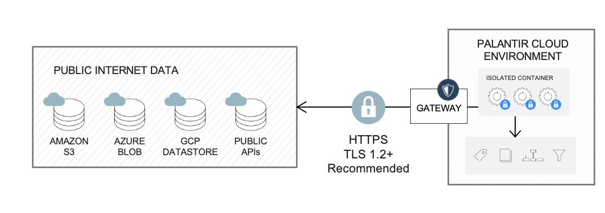
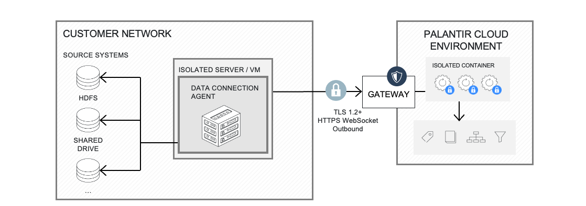
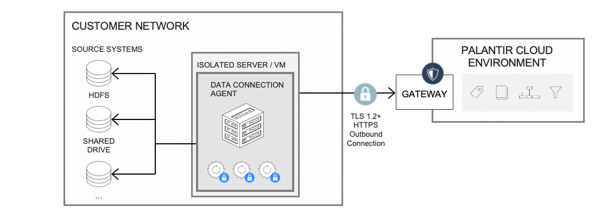

:::callout{theme="neutral"} This type of connection can also be referred to as a "direct connection". :::
Foundry worker with direct connection policies is the recommended default for accessing external systems that accept inbound traffic from Foundry, such as REST APIs and cloud/SaaS systems.
In this scenario, data connections run in an isolated compute container called a Foundry worker, which handles authenticated encrypted network requests. The external system must accept inbound traffic from Foundry. Network egress from Foundry is managed and administered in-platform via direct connection egress policies.
External system credentials are stored with AES-256-GCM server-side encryption and can only be decrypted by containers triggered by authorized users.
To create a direct connection, follow instructions about setting up a source.

:::callout{theme="neutral"} This type of connection can also be referred to as an "agent proxy" or an "agent thin mode" connection. :::
Foundry worker with agent proxy policies is the recommended architecture to access external systems hosted on private networks. It requires the use of a data connection agent.
In this scenario, the agent acts as a simple network tunnel without performing any data processing itself.
The agent initiates a network request with Foundry to establish a websocket connection. Learn more about network controls available on agents.
All data connection and computation capabilities are executed by a Foundry worker, an isolated container with scalable compute resources that processes data and communicates with external systems via the provided websocket.
The ability to use the agent as a proxy is granularly managed and administered in-platform via agent proxy egress policies.
Multiple agents can be used to load balance workloads across multiple external systems.
Like direct connections, external system credentials are stored using AES-256-GCM server-side encryption and can only be decrypted by the container triggered by authorized users.
To create an agent-proxy connection, you will need to:

:::callout{theme="warning" title="Legacy"} Agent worker is in the legacy phase of development. We recommend Foundry worker with agent proxy for on-premise and privately hosted systems. See Foundry worker vs. agent worker for the comparison. :::
:::callout{theme="neutral"} This type of connection can also be referred to as "agent thick mode". :::
Agent worker connection is the historical architecture used to access external systems hosted on private networks from Foundry. It requires the use of a data connection agent. Learn more about agent worker known limitations.
To migrate an existing agent worker source to a Foundry worker, follow the migration guide.
In this scenario, the agent constantly polls Foundry via unidirectional outbound connections secured by HTTPS for new tasks to execute. Once received, the task is executed by the agent itself, also called agent worker and results are sent to Foundry over that same unidirectional connection. All the networking configuration required for the agent to be able to communicate with internal source systems is configured on the agent host itself.
External system credentials are stored on the platform using AES-128-GCM encryption with keys stored on the agent. During capability execution, the agent retrieves encrypted credentials from Foundry, decrypts them locally, and uses them for queries. Decrypted credentials are automatically deleted from memory after execution.
To create an agent worker connection, you will need to:

| Type of connection | Capability execution | Networking | System credentials |
|---|---|---|---|
| Direct connection | In Foundry | Direct from Foundry to source systems. | Stored encrypted in platform with encryption keys in platform. |
| Agent proxy | In Foundry | Outbound connection from agent to Foundry to establish a websocket and proxy traffic. | Stored encrypted in platform with encryption keys in platform. |
| Agent worker (legacy) | On agent host | Outbound connection from agent to Foundry to poll tasks. Inbound connection from agent to source systems. | Stored encrypted in platform with encryption keys on agent. |